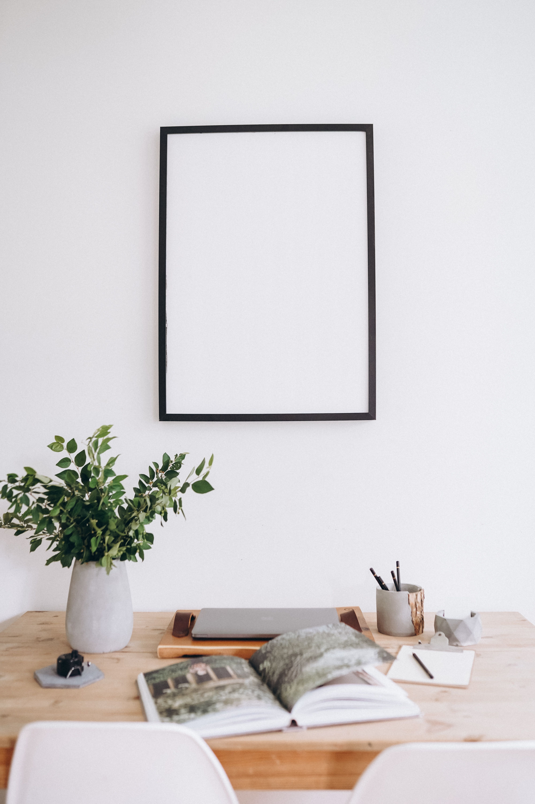

En este artículo
Introducción
Consejos para mantener un jardín bonito con poco tiempo mediante plantas resistentes, riego eficiente, acolchado y una rutina de mantenimiento realista.
Antes de aplicar cualquier cambio conviene observar las condiciones reales y definir qué problema se quiere resolver. Esta planificación permite evitar soluciones genéricas, compras innecesarias y rutinas difíciles de mantener.
La guía está organizada en tres bloques prácticos para conservar la misma estructura editorial de Casa & Jardín: un primer paso de diagnóstico, un segundo bloque de aplicación y un tercero de mantenimiento y prevención.
Las recomendaciones deben adaptarse al espacio, al clima y a las instrucciones de fabricantes o profesionales cuando corresponda. En tareas técnicas o de riesgo, la seguridad siempre tiene prioridad.
Diseña para reducir tareas desde el principio
Un jardín fácil de mantener empieza antes de la poda y el riego: comienza con decisiones de diseño. Si cada planta necesita condiciones diferentes, existen demasiadas macetas pequeñas y el césped ocupa zonas que apenas se utilizan, el mantenimiento crecerá inevitablemente. Observa durante una semana qué tareas te consumen más tiempo y dónde podrías simplificar.
Elige plantas adaptadas al clima, al suelo y a la cantidad de luz. Una especie que lucha constantemente contra calor, sombra o sequía necesitará intervenciones continuas. Los viveros locales pueden recomendar variedades probadas en condiciones similares. Investiga además el tamaño adulto para no plantar arbustos que luego debas recortar todas las semanas.
Agrupa plantas con necesidades de agua parecidas. Esta organización permite regar por zonas y evita mantener todo el jardín con la misma frecuencia. Una zona de especies resistentes a sequía puede recibir menos agua que un parterre de plantas que requieren humedad constante. La zonificación reduce tiempo y consumo.
Si el césped demanda demasiada atención, reduce únicamente la superficie que no tiene una función. Sustituir áreas difíciles por caminos, cubresuelos adecuados, grava bien instalada o una zona de estancia puede disminuir siega y riego. No es necesario eliminar todo el césped cuando se utiliza para jugar o descansar.
Los bordes claros entre césped y macizos facilitan el trabajo. Un borde estable reduce invasiones, ayuda a pasar la cortadora y mantiene las formas definidas. Evita diseños con demasiadas curvas estrechas que obliguen a realizar recortes manuales complejos.
Deja separación suficiente entre plantas. Un jardín joven puede parecer menos lleno, pero los ejemplares crecerán. Plantar demasiado junto produce competencia, humedad estancada y podas frecuentes. El tamaño adulto debe guiar la distancia, no el tamaño del ejemplar comprado.
Utiliza elementos permanentes para mantener estructura durante todo el año: arbustos perennes, caminos, muros bajos, recipientes grandes o mobiliario resistente. Así el jardín no depende únicamente de flores estacionales para verse cuidado.
Consejo práctico
Aplica los cambios de forma gradual, observa el resultado durante varios días y corrige solo aquello que realmente lo necesite. Este método facilita identificar qué decisión funciona mejor y evita intervenciones innecesarias.
Riego, acolchado y control de hierbas con menos esfuerzo
El riego automático puede ahorrar muchas horas cuando está bien diseñado. El goteo lleva agua cerca de las raíces y puede dividirse por sectores. Antes de depender de un programador, prueba todos los emisores, comprueba presión y revisa que ninguna planta quede sin agua.

No programes el riego para funcionar igual todo el año. Ajusta duración según temperatura, lluvia y etapa de crecimiento. Un sensor o programador inteligente puede ayudar, pero sigue siendo necesario observar el suelo y corregir errores. La automatización reduce trabajo, no elimina supervisión.
El acolchado orgánico puede disminuir evaporación y limitar parte de las hierbas. Aplícalo en un espesor razonable y mantenlo separado de troncos y coronas. Una capa excesiva pegada a la base de una planta puede mantener demasiada humedad y favorecer daños.
Mejorar la estructura del suelo también reduce mantenimiento. Suelos sanos retienen agua y nutrientes con mayor equilibrio. Incorpora materia orgánica bien descompuesta cuando sea apropiado y evita trabajar arcillas cuando están muy mojadas, porque puedes aumentar compactación.
Controla las hierbas cuando todavía son pequeñas. Dedicar cinco o diez minutos una vez por semana evita que produzcan semillas y ocupen grandes áreas. Extraer la raíz cuando sea posible suele ser más eficiente que cortar repetidamente la parte aérea.
Mantén herramientas cerca del lugar de uso. Un soporte con tijeras, guantes y una pequeña azada evita perder tiempo reuniendo materiales. Limpia y afila herramientas para que cada tarea requiera menos esfuerzo y produzca cortes más limpios.
Revisa fugas, goteros y mangueras al inicio de cada temporada. Una conexión que pierde agua puede desperdiciar recursos durante semanas. Pequeñas reparaciones preventivas suelen ser mucho más rápidas que corregir plantas dañadas por un riego irregular.
¿Qué debemos tener en cuenta?
Aplica los cambios de forma gradual, observa el resultado durante varios días y corrige solo aquello que realmente lo necesite. Este método facilita identificar qué decisión funciona mejor y evita intervenciones innecesarias.
Crea una rutina semanal corta y sostenible
Divide el mantenimiento en bloques pequeños. Una sesión de quince minutos puede servir para retirar hierbas de un macizo; otra, para cortar flores secas; otra, para revisar riego. Esperar a tener una tarde completa libre hace que las tareas se acumulen y parezcan más difíciles de empezar.
Trabaja por sectores. Una semana puedes concentrarte en la entrada y el jardín delantero; otra, en el patio y los arbustos. Esta rotación mantiene todo razonablemente cuidado sin intentar perfeccionar cada zona al mismo tiempo.
Prioriza áreas visibles. Mantener bien la entrada, el camino principal y la zona donde descansas produce una impresión general de orden. Las zonas secundarias pueden adoptar un estilo más natural, con menos recortes y mayor tolerancia a hojas secas o crecimiento irregular.
Utiliza plantas perennes y arbustos resistentes para reducir reemplazos. Las flores anuales aportan color, pero plantar grandes cantidades cada temporada consume tiempo. Puedes reservarlas para recipientes o zonas pequeñas de alto impacto.
Las macetas requieren más riego que el suelo. Si tienes poco tiempo, utiliza menos recipientes y elige tamaños suficientemente grandes. Agrúpalos cerca de una fuente de agua y evita colecciones dispersas por todo el jardín.

Si una planta enferma repetidamente o no se adapta a la ubicación, considera reemplazarla. Mantener durante años una especie problemática puede consumir horas, productos y agua. Elegir una alternativa compatible no significa fracasar: forma parte de ajustar el jardín a tu realidad.
Al final de cada estación, anota qué tareas fueron más pesadas. Si pasaste todo el verano recortando un seto demasiado vigoroso, quizá debas sustituirlo por una especie de crecimiento más moderado. Un jardín de bajo mantenimiento se construye mediante pequeñas correcciones acumuladas.
Recomendaciones prácticas
Aplica los cambios de forma gradual, observa el resultado durante varios días y corrige solo aquello que realmente lo necesite. Este método facilita identificar qué decisión funciona mejor y evita intervenciones innecesarias.
Cómo simplificar todavía más el mantenimiento
Reserva una zona prioritaria visible desde la casa o la entrada. Mantener especialmente cuidada un área pequeña crea una buena impresión general aunque otras partes sigan un estilo más natural. Concentra allí flores de temporada, recipientes decorativos o detalles que requieren mayor atención.
Elige arbustos cuya forma natural ya se acerque al resultado que deseas. Si una especie crece mucho más que la altura final prevista, tendrás que recortarla continuamente. Antes de plantar, revisa altura, anchura y ritmo de crecimiento adulto.
Las plantas que producen muchas semillas pueden aumentar el trabajo si aparecen en zonas no deseadas. Investiga su comportamiento local y evita especies invasoras. Una planta atractiva puede convertirse en una tarea constante si se reproduce con demasiada facilidad.
Los caminos deben ser suficientemente amplios y estables. Un recorrido claro reduce barro, evita pisar macizos y permite transportar herramientas o una carretilla sin dañar plantas. Los bordes flojos o mal nivelados deben repararse pronto para evitar trabajos mayores.
Las hojas secas no necesitan retirarse de todo el jardín de la misma manera. En caminos y césped puede ser necesario recogerlas, mientras una capa moderada de hojas trituradas puede beneficiar zonas bajo árboles. Evita acumulaciones gruesas y húmedas sobre plantas sensibles.
El mobiliario exterior también forma parte del mantenimiento. Elige mesas y sillas que soporten el clima y que puedan limpiarse con facilidad. Cojines que deben guardarse todos los días o muebles que requieren tratamientos frecuentes añaden tareas que compiten con el cuidado del jardín.
Automatiza solo procesos que entiendes. Un robot cortacésped puede ahorrar tiempo, pero necesita límites seguros, mantenimiento de cuchillas y revisión periódica. El riego automático también requiere comprobar emisores y adaptar programas a la estación.
Planifica el color con floraciones escalonadas. Combinar especies que florecen en distintos momentos mantiene interés visual durante más meses y reduce la necesidad de reemplazar continuamente plantas de temporada.
Después de tormentas, dedica unos minutos a revisar ramas, tutores y macetas. Resolver un daño pequeño inmediatamente evita que una estructura inclinada o una rama rota produzca problemas mayores. No realices podas en altura sin formación y equipo adecuado.

Si una tarea concreta consume demasiado tiempo todos los años, modifica el diseño. Un seto demasiado vigoroso, una pendiente difícil de segar o una zona con riego complicado son señales de que el jardín necesita simplificación, no más esfuerzo.
Una estrategia útil es definir un límite semanal. Por ejemplo, treinta minutos repartidos en tres sesiones cortas. Este límite obliga a priorizar y evita convertir el jardín en una obligación que ocupa todo el tiempo libre.
Al final de cada temporada, anota qué funcionó. Qué plantas resistieron mejor, qué zonas necesitaron más agua y qué herramientas realmente utilizaste. Esa información permite mejorar el jardín año tras año y reducir tareas innecesarias.
Detalles adicionales para mantener el resultado
Una forma práctica de ahorrar tiempo es reducir el número de decisiones repetidas. Utiliza el mismo tipo de acolchado en varios macizos, repite algunas especies resistentes y agrupa herramientas por tarea. La repetición bien planificada simplifica compras, reposiciones y mantenimiento sin hacer que el jardín resulte monótono.
Si tienes una zona de huerto, limita el número de cultivos a aquellos que realmente consumes y que se adaptan a tu clima. Cultivar demasiadas variedades diferentes puede aumentar riego, tutores, cosecha y vigilancia. Un huerto pequeño y constante suele ser más productivo para una agenda ocupada.
En recipientes, utiliza sustratos adecuados y evita mezclas que se secan demasiado rápido para el clima local. Una maceta correcta y un sustrato equilibrado pueden reducir mucho la frecuencia de riego. No llenes recipientes enormes con plantas pequeñas solo para regar menos; el exceso de volumen puede retener demasiada humedad.
Para mantener una apariencia cuidada, prioriza podas que mejoren estructura y salud en lugar de recortes cosméticos continuos. Retira ramas secas, dañadas o que interfieran con caminos y deja que el resto de la planta mantenga una forma natural cuando sea posible.
Las flores marchitas pueden retirarse en especies donde esto prolonga floración o mejora aspecto, pero no es necesario hacerlo en todas. Algunas plantas producen semillas decorativas o alimento para fauna. Conocer el comportamiento evita tareas que no aportan un beneficio real.
Si el jardín tiene iluminación exterior, utiliza temporizadores o sensores para no tener que encender y apagar manualmente cada noche. Revisa que los equipos sean aptos para exterior y mantén cables, transformadores y conexiones según las instrucciones.
Las zonas de almacenamiento deben permanecer secas y accesibles. Guardar herramientas detrás de muebles o macetas pesadas hace que cada tarea requiera preparación. Un cobertizo pequeño, un armario exterior o ganchos bien colocados reducen fricción.
Cuando el tiempo sea realmente limitado, acepta ayuda profesional en trabajos estacionales: poda de árboles, limpieza profunda o revisión de riego. Delegar tareas de riesgo o gran esfuerzo permite concentrarte en el cuidado cotidiano y mantener el jardín dentro de una rutina realista.
Preguntas frecuentes
¿Qué plantas requieren menos mantenimiento?
Las mejor adaptadas a tu clima, suelo y luz. Las especies locales o bien adaptadas suelen necesitar menos riego y protección.
¿Cómo reducir el tiempo de riego?
Agrupa plantas por necesidades e instala riego por goteo o sistemas automáticos bien ajustados.
¿El acolchado evita todas las hierbas?
No, pero puede reducir germinación y facilitar el control, además de ayudar a conservar humedad.
¿Es buena idea eliminar todo el césped?
Solo si no lo utilizas y su mantenimiento no compensa. Puedes reducir las zonas menos funcionales sin eliminarlo completamente.
¿Cuánto tiempo semanal necesita un jardín sencillo?
Depende del tamaño, pero una rutina de sesiones cortas y frecuentes puede mantener un jardín bien planificado sin dedicar jornadas completas.
Conclusión
Cómo mantener el jardín bonito cuando tienes poco tiempo funciona mejor cuando las decisiones responden a las condiciones reales del espacio y pueden mantenerse con una rutina sencilla.
La constancia suele ofrecer mejores resultados que las intervenciones intensas realizadas solo cuando aparece un problema. Revisar, limpiar y ajustar a tiempo evita trabajo acumulado.
Si una tarea implica riesgo, instalaciones, estructura o un problema que no puedes identificar, consulta a un profesional cualificado antes de continuar.
Con planificación, observación y mantenimiento preventivo es posible conseguir un resultado más cómodo, funcional y duradero.